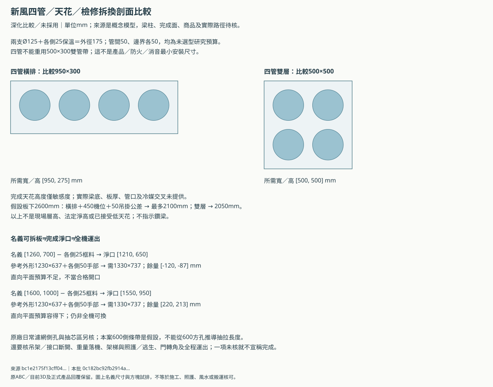
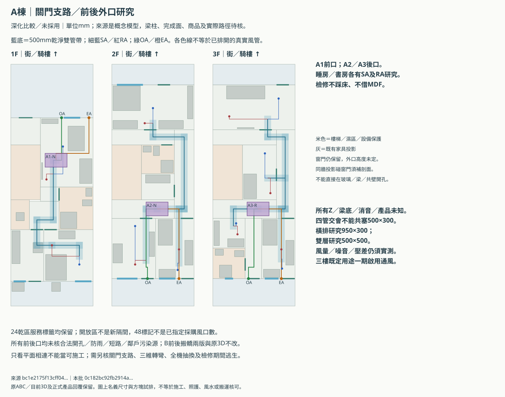
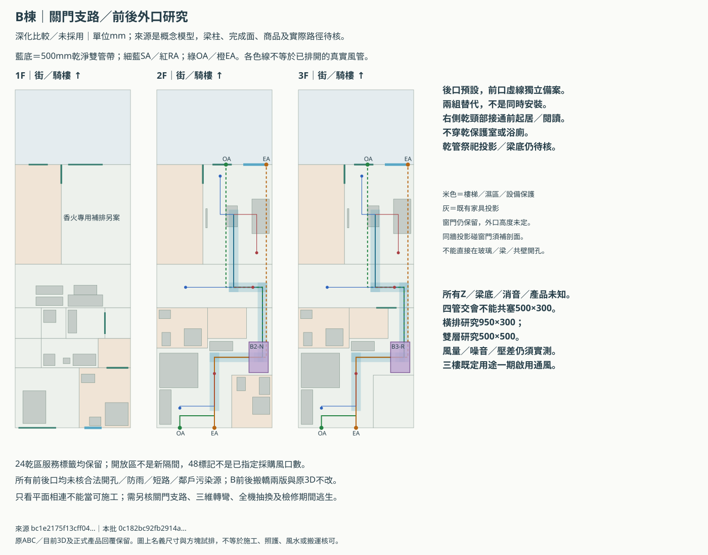
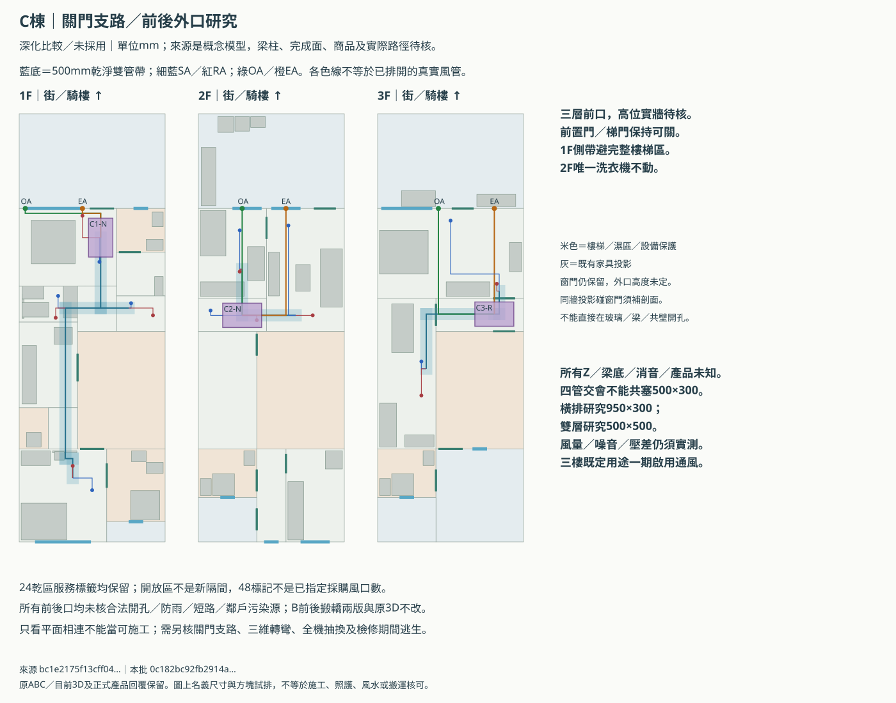

ABC新風深化：關門支路、前後外口與檢修
獨立比較／未採用。8機位不是確定8台；24乾區標籤不是新隔間；48末端只是座標研究。沒有核定風量、高度、合法開孔、產品或施工／照護／消防／風水核可。原ABC、目前3D與149控制不改。
本批先接續常用層分區，不封死其他集中架構。三樓既定用途一期要通風，未知人數不當0。上一批機位／同範圍報價／尺寸與代價完整說明。
本輪具體進展
B2／B3沿右側乾頸部接通前起居／閱讀，500mm整帶避浴廁、樓梯及乾保護室，不先增加機台；但梁底、乾管祭祀投影與性能仍未核。C前置門／梯門可關，各乾區有密閉送回風研究，不借梯間或浴廁當一般回收。B香火另系統。
室外口只比前後端，不擅用側界共壁。B後側預設與無後口的前側備案各自保留，兩組替代。後巷前提不是合法開孔或乾淨空氣保證。
四管與檢修
雙管500×300不能塞四管；同高四管以950×300、雙層以500×500比較，需再加真實消音／分歧與梁冷媒剖面。天花敏感度不是已知層高或法定淨高。1260×700名義拆板扣假設框料／手部後不足；1600×1000整片可拆板僅平面預算容納，不是全機運出已完成。


室外口：同牆窗門投影不能忽略
| 替代組 | OA／EA水平距離mm（非法定門檻） | OA同牆投影 | EA同牆投影 | 狀態 |
|---|---|---|---|---|
| A1-front | 2000.0 | [] | [] | 未核Z／實牆／合法外口／污染源 |
| A2-rear | 2300.0 | ['door'] | [] | 未核Z／實牆／合法外口／污染源 |
| A3-rear | 2400.0 | ['door'] | ['door'] | 未核Z／實牆／合法外口／污染源 |
| B2-rear | 1800.0 | [] | [] | 未核Z／實牆／合法外口／污染源 |
| B2-front | 2100.0 | ['door'] | ['candidate-window'] | 未核Z／實牆／合法外口／污染源 |
| B3-rear | 1800.0 | [] | [] | 未核Z／實牆／合法外口／污染源 |
| B3-front | 2100.0 | ['door'] | ['candidate-window'] | 未核Z／實牆／合法外口／污染源 |
| C1-front | 2350.0 | ['candidate-window'] | ['candidate-window'] | 未核Z／實牆／合法外口／污染源 |
| C2-front | 1800.0 | ['candidate-window'] | ['candidate-window'] | 未核Z／實牆／合法外口／污染源 |
| C3-front | 2300.0 | [] | [] | 未核Z／實牆／合法外口／污染源 |
投影重疊須取得窗頭以上實牆剖面，不改窗、不鑽梁；無記錄也不代表沒有窗門。另查鄰戶排氣、香火、道路、熱風及可開窗，不能把兩口距離當合格簽證。
各乾區關門供回風
| 乾區服務標籤 | 送風SA座標mm | 回風RA座標mm | 風量／高度 |
|---|---|---|---|
| A:floor-1:living｜前段合併客餐廳（騎樓後） | [3800, 6000] | [2600, 8400] | 未知；每層風量不重複派給各房 |
| A:floor-1:flex1｜孝親房（床＋衣櫃＋照護轉位） | [5000, 14600] | [3000, 13200] | 未知；每層風量不重複派給各房 |
| A:floor-2:master｜主臥（兩組衣櫃＋原淺櫃） | [3000, 3200] | [2400, 4300] | 未知；每層風量不重複派給各房 |
| A:floor-2:bedroom2｜次臥（向書房回收寬度） | [4800, 15000] | [4900, 13500] | 未知；每層風量不重複派給各房 |
| A:floor-2:study｜書房／工作室 | [1700, 11800] | [1700, 14600] | 未知；每層風量不重複派給各房 |
| A:floor-3:guest｜客房（淨寬待核） | [5050, 14900] | [5000, 13500] | 未知；每層風量不重複派給各房 |
| A:floor-3:entertainment｜家庭劇院（回收前段走道／隔音待核） | [4800, 2500] | [1200, 3800] | 未知；每層風量不重複派給各房 |
| A:floor-3:multi｜多用途休憩／沙發床區（展床待核） | [3800, 6500] | [4200, 9400] | 未知；每層風量不重複派給各房 |
| A:floor-3:rear-common｜閱讀／工作區（原書桌＋書櫃） | [1700, 11600] | [1800, 12400] | 未知；每層風量不重複派給各房 |
| B:floor-2:master｜L形主臥 | [1200, 16600] | [3000, 14800] | 未知；每層風量不重複派給各房 |
| B:floor-2:living2｜安靜起居｜後區（整廳上方禁睡） | [1500, 10300] | [5000, 10300] | 未知；每層風量不重複派給各房 |
| B:floor-2:living2-front｜安靜起居｜前區（禁作睡眠） | [3300, 4500] | [5200, 8500] | 未知；每層風量不重複派給各房 |
| B:floor-3:guest｜L形客房 | [1200, 16600] | [3000, 14800] | 未知；每層風量不重複派給各房 |
| B:floor-3:quiet-study｜安靜閱讀｜後區（整廳上方禁睡） | [1500, 10300] | [5000, 10300] | 未知；每層風量不重複派給各房 |
| B:floor-3:quiet-study-front｜安靜閱讀｜前區（禁放床／KTV） | [3300, 4500] | [5200, 8500] | 未知；每層風量不重複派給各房 |
| C:floor-1:elder｜孝親房側牆床比較（操作地面分時） | [3000, 15500] | [2200, 14500] | 未知；每層風量不重複派給各房 |
| C:floor-1:dining｜開放客餐廳｜四人餐桌區 | [3300, 6100] | [2600, 4200] | 未知；每層風量不重複派給各房 |
| C:floor-1:living｜開放客餐｜沙發電視區 | [1600, 7500] | [1500, 8400] | 未知；每層風量不重複派給各房 |
| C:floor-1:living-right｜前置門側共用前室（非獨立房） | [4600, 7800] | [5500, 8300] | 未知；每層風量不重複派給各房 |
| C:floor-2:guestroom2f｜前左有窗客房（單人床／位置取捨未定） | [1700, 4800] | [1700, 6500] | 未知；每層風量不重複派給各房 |
| C:floor-2:living2f｜二樓起居／前置門前室共用 | [3700, 4600] | [4700, 8300] | 未知；每層風量不重複派給各房 |
| C:floor-2:living-nook｜開放起居延伸／通行（不重複計面積） | [500, 8100] | [2400, 8500] | 未知；每層風量不重複派給各房 |
| C:floor-3:master3f｜前側主臥（4m樓高案面積取捨） | [3000, 4400] | [4900, 7000] | 未知；每層風量不重複派給各房 |
| C:floor-3:fitness3f｜加深運動區（原廠／隔振仍待核） | [1800, 10200] | [1800, 11600] | 未知；每層風量不重複派給各房 |
日常維護與全機拆換分開
| 機位 | 600側抽條帶平面未遇列出障礙的方向（非產品核可） | 待核 |
|---|---|---|
| A1-N | ['right', 'front', 'rear'] | 實際濾芯行程／安全架梯／整機落機及運出 |
| A2-N | ['left', 'right', 'front'] | 實際濾芯行程／安全架梯／整機落機及運出 |
| A3-R | ['left', 'right'] | 實際濾芯行程／安全架梯／整機落機及運出 |
| B2-N | ['left', 'front'] | 實際濾芯行程／安全架梯／整機落機及運出 |
| B3-R | ['left', 'front', 'rear'] | 實際濾芯行程／安全架梯／整機落機及運出 |
| C1-N | ['front', 'rear'] | 實際濾芯行程／安全架梯／整機落機及運出 |
| C2-N | ['left', 'right'] | 實際濾芯行程／安全架梯／整機落機及運出 |
| C3-R | ['left'] | 實際濾芯行程／安全架梯／整機落機及運出 |
官方商品資料仍不是本案選型
VH-T15D官網最低檔90m³/h，高於C2一人前批25～35初估；只提示低負載工作點須核，不能直接說不適用。Panasonic FY-15ZY1W型錄設計頁建議側方600方孔，不能拿宣傳450點檢口當整機拆換口；本案600側條帶也不是原廠抽拉行程。
建商回覆與可下載資料
未知欄留空，不當0、不造價格。等同服務範圍的三架構報價仍用前批九列表。
三棟圖面



尚未完成的核對
- 外牆合法開孔、三棟基地相鄰座標及鄰戶污染源／風向
- 原窗門與高位實牆、梁柱及防火剖面
- 四接口／消音／冷媒相遇的三維斷面與完成天花
- 真實產品最低風量／濾網積塵工作點及關門夜間實測
- 地面架梯、照護／逃生與整機落機／全程運出
- B香火獨立補排及上層乾管的指定家規確認；兩衛外窗／原面積取捨不變
本批 0c182bc92fb2914abcc417609931a21b04db5df5b5c64b14573992159a9d4391
靜態輸出；瀏覽器／WebGL未執行，不能沿用舊passed。屋主前置決策、法規／宗教／照護／產品／施工核可均不從此圖推定。